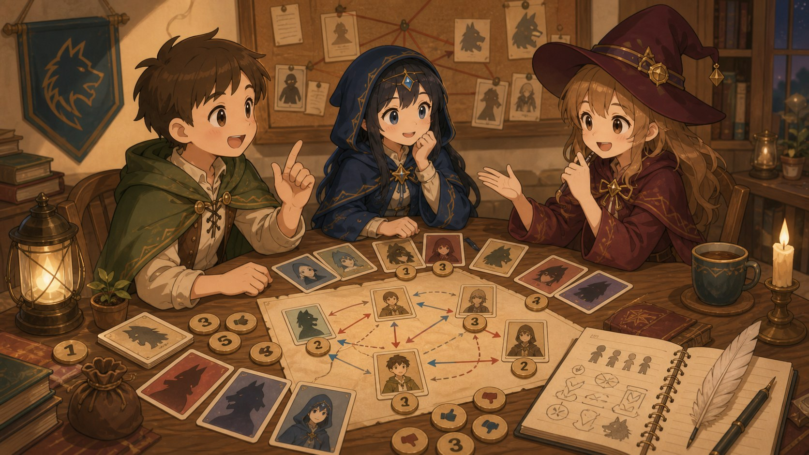

先判断带不带身份
带身份的人常会更在意夜晚结果、刀口、查验和技能路线。但高手会伪装，所以只能当线索。
新手最容易把狼人杀玩成“看谁像坏人”。其实更稳的办法是：先听信息，再看票型，再看关系，最后才看状态。

带身份的人常会更在意夜晚结果、刀口、查验和技能路线。但高手会伪装，所以只能当线索。
好人紧张多半怕误导，狼人紧张多半怕暴露队友收益。看他紧张的点是不是总和狼队收益同向。
一个停顿、一个眼神、一次口误都不能直接定狼。状态要用发言和票型来验。
| 关系 | 怎么看 | 别踩的坑 |
|---|---|---|
| 像见面 | 互相递话、补逻辑、帮对方挡压力，票型也经常同向。 | 好人也会自然共识，不能只凭一次互保定双狼。 |
| 真不见面 | 多轮都没有队友视角，关键票型也没有互相救。 | 不互动不等于一定不共狼，要防提前约好互不处理。 |
| 假不见面 | 嘴上不聊对方，但关键轮次利益一致，轻踩从不进狼坑。 | 看他们有没有真实承担让对方出局的风险。 |
他站谁边，打谁，准备投谁。先记结果，不急着评价对错。
理由是不是来自发言、票型、技能、关系。只说“像”就是弱理由。
这段发言最后帮谁拿票，帮谁洗白，帮谁躲过焦点。
新信息出来后，他有没有自然改判断。永远只往一个结论拼，身份就要打问号。
不是第一天装得像就够了，要让验人、警徽流、狼坑和队友位置能撑到后面。
冲锋不是闭眼保队友，而是用好人的语言帮假世界补理由，同时给自己留退路。
倒钩不是只打一张队友。打完队友后，还要继续找外置狼坑和关系证据。
不在焦点里，也要慢慢定义场上关系，让好人朝错误方向互打。
少说不等于会藏。真正的深水狼要让自己的每次发言都像普通好人的自然判断。
机械狼、白狼王、狼美人这类身份先想技能收益，再想自己能不能活很久。